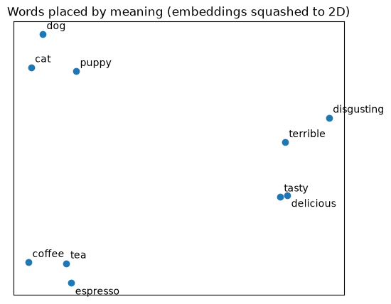

Class lab · Embeddings
Zero-shot sentiment: no labeled training data, just two sentences describing each class.
intro_to_embeddings_review_classifier.ipynb
Learning goals
01
A list of numbers that captures the meaning of a piece of text.
02
Texts with similar meaning get similar numbers. Cosine similarity measures how close.
03
Label a review by checking which class description it sits closest to.
Step 1 · Setup
pip install openai python-dotenv pandas numpy scikit-learn matplotlib jupyter
cp env.sample .env
# then set OPENAI_API_KEY=...
jupyter notebook intro_to_embeddings_review_classifier.ipynb
load_dotenv()
client = OpenAI()
MODEL = "text-embedding-3-small"
One model for everything. The reviews were embedded with text-embedding-3-small, so our class descriptions must use the same model, or the vectors can't be compared.
Cost: a full run costs a fraction of a cent.
Step 2 · Your first embedding
Input text
"I love this coffee!"
Embedding vector
[-0.0443, -0.0314, -0.0405, -0.0301, -0.0415, … ]
1,536 values
def embed(texts):
response = client.embeddings.create(
model=MODEL, input=texts)
return [np.array(item.embedding)
for item in response.data]
Every text, short or long, becomes the same-length vector. The numbers mean nothing alone; what matters is how they compare to other embeddings.
Step 3 · Measuring similarity
Compared with "This coffee tastes amazing."
"What a delicious cup of coffee!"
0.65
"The coffee was awful and bitter."
0.52
"My dog loves these treats."
0.26
def similarity(a, b):
return np.dot(a, b) / (
np.linalg.norm(a) *
np.linalg.norm(b))
Same topic, same tone scores highest. Same topic, opposite tone is still close. A different topic is far away.
How cosine similarity works
c “My dog loves these treats.”
cos = 0.26 (θ ≈ 75°)
b “What a delicious cup of coffee!”
cos = 0.65 (θ ≈ 49°)
a “This coffee tastes amazing.”
θ
2-D sketch using the notebook's scores. Real embeddings have 1,536 dimensions, but the angle idea is the same.
cos(θ) =
a · b
‖a‖ ‖b‖
=
∑ aᵢ bᵢ
√∑ aᵢ² · √∑ bᵢ²
% LaTeX
\cos\theta = \frac{a \cdot b}{\lVert a \rVert \, \lVert b \rVert}
= \frac{\sum_{i=1}^{n} a_i b_i}
{\sqrt{\sum_{i=1}^{n} a_i^2} \, \sqrt{\sum_{i=1}^{n} b_i^2}}
cos ≈ 1
same meaning
cos = 0
unrelated
cos = −1
opposite
OpenAI embeddings have length 1, so ‖a‖ ‖b‖ = 1 and the score is just the dot product.
Seeing it in a picture
We can't draw 1,536 dimensions, so PCA squashes them to 2 while keeping as much structure as possible.
Animals, drinks and taste words form their own neighborhoods.
PCA(n_components=2).fit_transform(embed(words))

Step 4 · The classification idea
1
"An Amazon review with a negative sentiment."
2
Same model as the reviews, so the vectors are comparable.
3
For each review, the most similar description is the prediction.
"Zero" because we use zero labeled examples. The class is defined only by a sentence.
Try it on one review
Review
"These chips arrived stale and tasted like cardboard."
Similarity to negative description
0.298
Higher: predicted negative
Similarity to positive description
0.165
Lower
Step 5 · Load real Amazon reviews
From the OpenAI Cookbook. Each review has a 1–5 star score, and its embedding was already calculated with the same model.
Stars are the true answer. We use them only to check the classifier, never to train it.
| Stars | Sentiment |
|---|---|
| 1–2 | negative |
| 3 | neutral (skipped for now) |
| 4–5 | positive |
positive
789
negative
136
Imbalanced: about 85% positive. Keep that in mind when reading accuracy.
Step 6 · Classify every review
labels = {
"negative": "An Amazon review with
a negative sentiment.",
"positive": "An Amazon review with
a positive sentiment.",
}
label_vectors = embed(list(labels.values()))
def classify(vector):
scores = [similarity(vector, lv)
for lv in label_vectors]
return list(labels)[np.argmax(scores)]
Only the two descriptions are embedded. The reviews' vectors are already in the dataset.
Score the review against each description, return the label with the highest similarity.
reviews["predicted"] =
reviews["embedding"].apply(classify)
Step 7 · How well did it do?
94.9%
878 of 925 reviews correct, with zero training examples.
predicted negative
predicted positive
true negative
131
correct
5
missed
true positive
42
wrongly negative
747
correct
The diagonal is right; everything else is a mistake. Most errors are positive reviews read as negative.
Reading the confusion matrix
Focus class: positive (the usual convention)
predicted pos
predicted neg
true pos
TP
747
caught
FN
42
missed
true neg
FP
5
false alarm
TN
131
correctly rejected
99.3%
Of the 752 reviews we called positive, how many really were?
747 right
5 wrong (orange sliver)
94.7%
Of the 789 reviews that are positive, how many did we catch?
747 caught
42 missed (dashed)
Both look excellent, but flip the focus to negative: precision drops to 76%. Next slide.
F1 score
Precision
Recall
F1
.76
.96
.85
.99
.95
.97
negative (136)
positive (789)
F1 = 2 × P × R / (P + R)
neg: 2 × .757 × .963 / 1.720 = .848
A harmonic mean punishes imbalance: P = 1.0 and R = 0.1 average to 0.55, but F1 is only 0.18.
(.848 + .970) / 2 = 0.909, the README's number.
Always guessing "positive" scores 85% accuracy, yet catches zero complaints: macro-F1 only 0.46.
Looking at the mistakes
"Good, but not Wolfgang Puck good"
4★, true positive. Reads like a complaint, predicted negative.
"Great coffee, not bitter."
5★, true positive. "Bitter" pulls it toward negative.
"yummy cookies!"
4★, true positive. Mentions one bad package, predicted negative.
These are hard for people too.
Step 8 · Try it yourself
def classify_text(text):
return classify(
embed([text])[0])
positive
"Best snack I've bought all year, my kids love it."
negative
"The package was crushed and half the cookies were broken."
negative
"Way too sweet, I couldn't finish it."
Add your own review to my_reviews and rerun.
Going further · the full notebook
| Task | Method | Accuracy | Macro-F1 |
|---|---|---|---|
| Positive vs. negative | Bare label words | 0.874 | 0.801 |
| Positive vs. negative | Sentence descriptions (this lab) | 0.949 | 0.909 |
| Positive vs. negative | Descriptions + adjusted cut-off* | 0.969 | 0.932 |
| Neg / neutral / pos | Sentence descriptions | 0.670 | 0.607 |
| Positive vs. negative | Logistic regression (trained)† | 0.973 | 0.950 |
| Neg / neutral / pos | Logistic regression (trained)† | 0.885 | 0.749 |
Full sentences beat bare words by about 7.5 points. Neutral is the weak spot. With labels, a trained model wins, especially for three classes.
* Cut-off picked on the same reviews it was scored on, so somewhat optimistic. † Scored on a 20% held-out split. Source: amazon_reviews_zero_shot_classification.ipynb
Same trick, new classes · topics
Packaging & shipping
2.84★
Price & value
4.06★
Taste & flavor
4.31★
Coffee & tea
4.33★
Pet food
4.35★
Health & nutrition
4.41★
Swap the descriptions for topics, like "An Amazon review about coffee or tea.", and the same code sorts reviews by subject.
Sentiment says how customers feel; topics explain why.
Mean star rating by predicted topic. Topics have no ground truth, so this is exploratory.
Exercises
Use just "positive" and "negative" as descriptions and rerun Steps 4–7. Up or down? Why might a full sentence work better?
Keep the 3★ reviews, add a "neutral" description, and label 3★ as neutral. How does accuracy change?
Write descriptions like "An Amazon review about pet food." Which reviews land in each topic?
Add sentences to the Step 3 table. Find two with different words but very high similarity.
Recap
Turns text into a list of numbers that represents its meaning.
Tells us how close two meanings are.
Compare each text with a description of each class and pick the closest. No labeled training data needed.
amazon_reviews_zero_shot_classification.ipynb: precision–recall, three classes, topics, and a trained baseline.